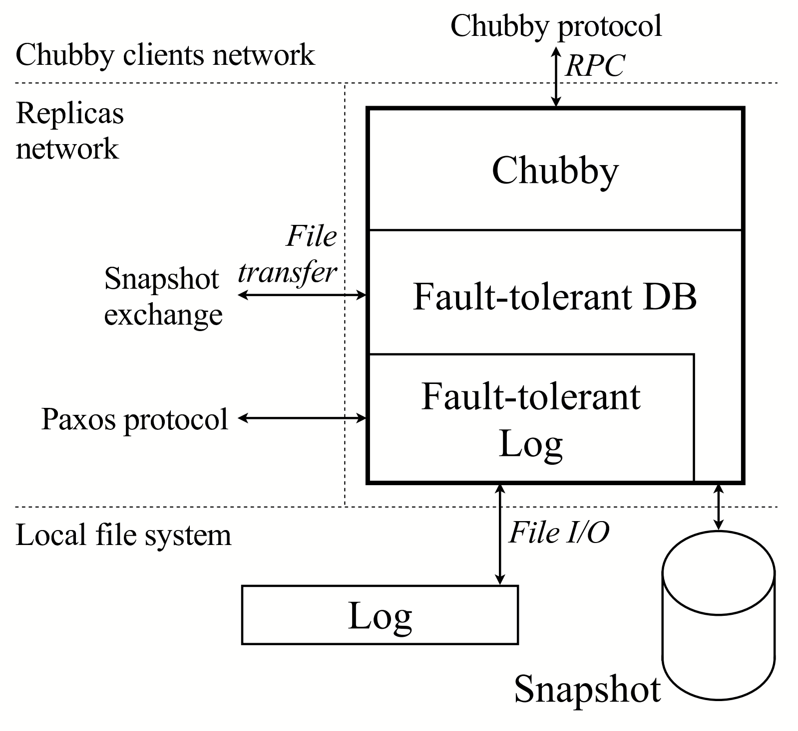
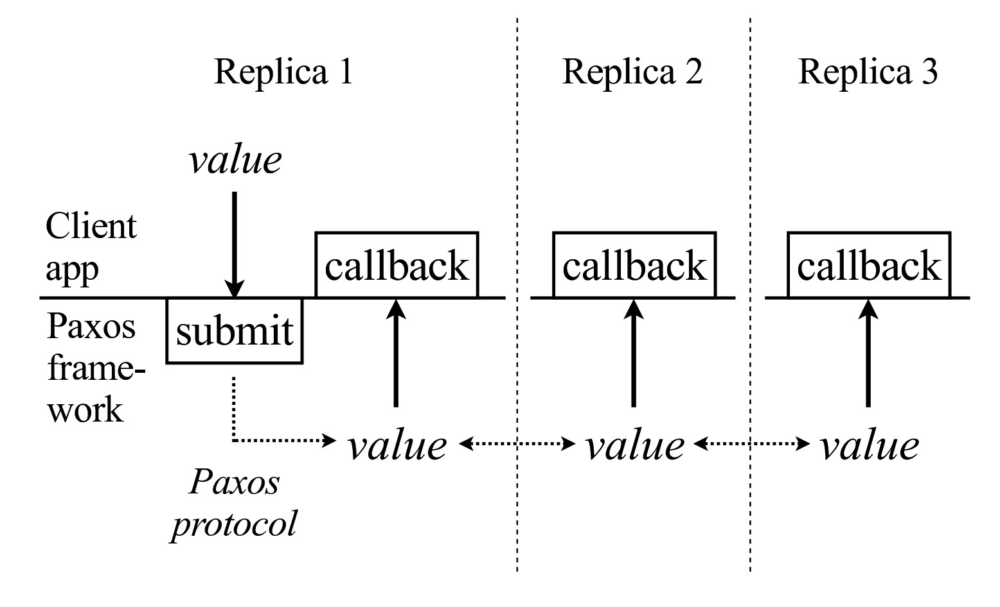
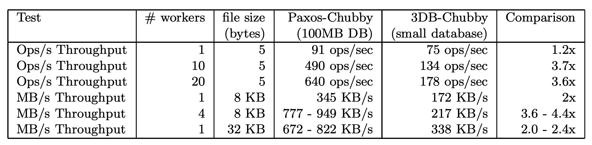

Paxos Made Live(译)
译者序：Google在它的分布式系统中，大量使用了Paxos，比如Chubby、MegaStore、Spanner等系统中。这篇文章详细讲述了最初实现Paxos碰到的一系列问题及解决方案，是一篇全面讲解分布式系统工程实践的文章。其中提到的很多真实发生的场景，相信做过分布式系统的人都会感同身受，每个人或多或少都会遇到过一些类似的问题。与理论界的文章相比，这篇文章显得非常实际，所有内容都来自Google一线工程师的实战，非常值得一看。
摘要
本文描述了我们使用Paxos一致性算法构建容错数据库的经验。尽管在这个领域已经有很多相关文献了，但是实践证明要构建这样的一个数据库仍不是一件简单的事情。本文描述了我们在算法方面的选择和所碰到的工程性问题，及其解决方案。测试结果表明我们构建出了一个非常具有竞争力的系统。
1. 简介
众所周知，基于普通商业化硬件的容错可以通过复制[17,18]实现。通用的方法是通过使用一致性算法来确保所有副本彼此都是一致的[8,14,17]。通过在一系列输入值上重复使用这样的一个算法，就可以在每个副本上构建出关于这些值的相同日志。如果这些值是在某数据结构上的操作，那么就可以利用该日志让每个副本的数据结构达到相同的状态。比如，如果日志包含一系列数据库操作，同时如果每个副本上的数据库都被执行了相同序列的操作，最终所有副本将会具有相同的数据库内容(假设它们最初都具有相同的数据库初始化状态)。
这种通用策略可以用来实现各种各样的容错原语，容错数据库只是其中一例。实际上在过去的二十年里，人们已经进行了很多关于一致性问题的研究。目前已经有几个可以进行各种设置以及容忍各种错误的著名一致性算法。关于Paxos一致性算法[8]的理论研究[16]以及应用实践[10,11,12]的时间也已经超过了十年。
我们采用Paxos算法作为实现容错性日志框架的基础。我们将会基于该框架构建一个容错数据库。尽管目前已经有很多关于这个主题的研究资料，但是实际证明，由于如下种种原因使得构建这样一个产品系统仍然是一项非常艰巨的任务：
- 虽然Paxos算法本身用一页伪代码就可以描述下来，但是我们的完整实现包含了数千行C++代码。代码膨胀并不简单地是因为我们采用了C++来取代伪代码，也不是因为我们代码风格的繁琐。将该算法转换为一个实际的，产品级系统需要引入很多的features和优化(有些是已经发表过的研究成果，有些不是)。
- 容错算法研究领域擅于证明简短算法(通常只需要一页纸就可以放下所有伪代码)的正确性。但是这种方法无法扩展到一个具有几千行代码的实际系统。为了获取关于实际系统正确性的信心，需要综合使用各种不同方法。
- 容错算法通常只能容忍一个经过仔细选择的有限错误集合。但是现实世界将软件系统暴露于一个更广阔的错误模型空间中，这里可能包括算法的错误，实现的bug，操作失误。我们必须通过软件工程以及设计良好的操作流程来保证系统的健壮性，以应对各种可能的错误。
- 实际系统是很难被精确描述的。更糟的是，描述可能在实现过程中发生变化。因此，实现必须具有良好的适应性。最后，系统可能会因为在描述阶段的误解而出错。
本文描述了我们在将Paxos从理论搬到实践过程中遇到的一些算法方面的选择和工程上的挑战。这个过程中需要非常多的R&D方面的努力，而不是一个简单地将伪代码翻译为C++的过程。
本文剩余部分按照如下方式组织。下面两节将会展开描述下该项目的动机，以及我们构建的系统所投入运行的环境。之后，我们会快速回顾下Paxos。我们将我们的经验分为三类，挨个进行讨论：算法方面的一些缺陷，工程上的挑战，未预料到的错误。最后，以系统评测结果以及对我们所从事领域的更广阔视野上的观察和思考做为结束。
2. 背景
Chubby[1]是Google内部用以提供分布式锁机制以及存储小文件的容错系统。典型地，每个数据中会有一个Chubby实例，或者称为一个“cell”。很多Google系统—比如GFS和Bigtable都采用Chubby进行分布式协调以及少量元数据的存储。
Chubby通过复制实现容错。典型的Chubby cell由五个副本组成，它们运行相同的一份代码，每个都运行在一个专用计算机上。每个Chubby对象(比如，一个chubby锁，或者文件)都是作为数据库的一条记录进行存储。被复制的实际上是该数据库。任意时刻，其中一个副本会被认为是主。
Chubby客户端(比如GFS和Bigtable)会联系Chubby cell以获取服务。主副本为所有请求提供服务。如果某个Chubby客户端联系了一个不是主的副本，那么该副本会返回主的网络地址作为应答。然后Chubby客户端再去连接主。如果主出错了，一个新的主将会被自动选举出来，它会根据它本地的数据库副本继续提供服务。因此，是该多副本数据库保证了主failover时Chubby状态的连续性。
第一版的Chubby是基于一个商业性的、第三方的容错数据库；后面我们会一直采用“3DB”来作为该数据库的代号。该数据库历史上产生了一系列复制相关的bug。事实上，据我们所知，它的复制机制不是建立在一个经过证明的算法之上，而且我们也不知道它是否是正确的。由于该产品的一系列历史问题以及Chubby的重要性，我们最终决定使用我们基于Paxos算法的解决方案替换掉“3DB”。
3. 架构概览
图1展示了单个Chubby副本的架构。基于Paxos算法的容错性多副本日志位于该协议栈的底部。每个副本会维护一个该日志的本地拷贝。为保证每个副本的本地日志都具有相同的记录序列，需要重复运行Paxos算法。副本之间的通信基于一个Paxos-specific协议。

最后，Chubby使用该容错性数据库来保存它的状态。Chubby客户端与Chubby副本之间会通过一个Chubby-specific协议来进行通信。
我们花费了很大精力来设计清晰的接口，让Paxos框架、数据库、Chubby之间保持独立。我们这样做一方面是为了保证在系统开发过程中的模块透明性，另一方面是希望可以在其他应用中，重用该多副本日志系统。我们预测Google未来的很多系统都会需要通过复制实现容错。我们相信这样的一个容错性日志系统将会是构建这种系统的一个有力基础。
我们的容错性日志系统的API如图2所示。它包含一个向日志提交一个新值的函数调用。一旦被提交的值进入了容错性日志，我们的系统将会在每个副本上对客户端执行一个回调函数，同时将已提交的值传递给客户端。

4. 关于Paxos
本节我们会大概介绍一下基本的Paxos算法以及如何将多个Paxos执行实例串联起来(Multi-Paxos)。关于该算法的更形式化描述和正确性证明，推荐读者阅读[8,9,16]。熟悉Paxos的读者可以直接跳过该节内容。
4.1 Paxos基础
Paxos一致性算法运行在称为副本的一组进程集合上，这些进程需要在即使是发生错误的情况下也能在某一个值上达成一致。副本可能会发生crash以及由此引发的恢复(recover)。网络可能会发生丢包。副本可以访问一个不受crash影响的持久化存储。某些副本可能会为达到一致性提出某些值。如果半数以上的副本在足够长的时间内没有发生crash或其他错误，那么所有运行中的副本将可以在某个提出的值上达成一致。在我们的系统中，需要在“(多副本)日志中的下一条记录是哪条”上达成一致。
算法由三个阶段组成，这些阶段可能会因为失败而重复进行：
-
选举一个副本成为协调者(coordinator)
-
协调者选择一个值，将该值通过一个“accept”消息广播给所有副本，其他副本要么确认接受该消息要么拒绝它
-
一旦半数以上的副本 确认接受该协调者消息，那么一致性就达到了，协调者会广播一个“commit”消息通知所有副本
为提供一个关于该算法执行过程的一个直觉上的认识，首先考虑只有一个协调者同时没有错误发生的情况。一旦半数以上的副本收到了来自协调者的“accept”消息并确认接受，那么就达到了一致性。此后，只要是半数以下的副本发生错误，我们就可以保证至少有一个收到过一致性值的“副本”还是活着的。
实际中，协调者也可能会出错。Paxos并不要求任意时刻只有一个“副本”担任协调者。任意时刻都可能有多个副本决定成为协调者，并执行该算法。通常系统在工程实现中会尽量减少协调者的变更，因为这会导致一致性完成的时间延后。
这种灵活的选举策略意味着同时可能有多个副本认为自己是协调者。更进一步的，这些协调者可能会选出不同的值。Paxos通过引入两种机制来保证一致性：1)给协调者进行编号;2)对每个协调者的值的选取进行限制。
通过对协调者进行编号就可以使得每个副本可以区分出当前的协调者和先前的协调者。通过使用这种方式，副本就可以拒绝掉那些来自老的协调者的消息以避免一致性达成后又被破坏。Paxos通过给协调者安排一个如下的递增式序列号来给它们编号。每个副本保存着它目前为止收到的最新的序列号。当一个副本试图成为一个协调者时，它会生成一个比它所有已知的序列号都大的唯一序列号(比如，在一个具有n个副本的系统中，首先为每个副本r分配一个在0和n-1之间的标识符Ir。副本r可以选择一个比它所有已知的序列号大的最小s作为序号，同时保证s mod n=Ir)，并通过一个“propose”消息将该序列号广播给所有副本。如果半数以上的副本做出了响应，并且它们声明还未看到更大的序列号，那么该副本就会成为协调者。这些响应又被称为“promise”消息，因为副本会承诺此后会拒绝掉来自老的协调者的消息。“propose”和“promise”消息的交互就组成了上面的步骤1。
一旦一致性在某个值上达成，为了保证结果正确性Paxos必须保证未来的协调者也会选择一个与之相同的值。为了保证这一点，来自副本的“promise”消息会包含它们所收到的最新值，以及发送该值的协调者编号。新的协调者会选择最新的协调者的值作为它的值。如果所有的“promise”消息都不包含一个值，那么协调者可以自由地选择一个值进行提交。
上述算法可以工作的原因解释起来比较复杂。原理大概如下，新的协调者需要收到来自半数以上的副本发回的“promise”消息。因此，如果一致性已经通过前一个协调者达成，这样就可以保证新的协调者一定可以通过某个副本获知已经选定的那个值。通过归纳法，可以得出这个值一定是所有收到的响应中编号最高的，这样就可以保证它会被新的协调者选中。
4.2 Multi-Paxos
实际系统会以Paxos为基础来实现在一系列值上的一致性，比如一个多副本日志系统。简单的实现方式就是重复地执行Paxos算法。我们将每个执行过程称为一个Paxos实例。向Paxos提交一个值就意味着在提交该值时会启动一个Paxos执行实例。
在Multi-Paxos算法中，某些慢的副本可能还没有参与到最近的Paxos实例中。我们使用一种追赶机制来使得落在后面的副本可以追上前面的副本。
每个副本会维护一个本地的持久化日志来记录所有的Paxos相关动作。当一个副本发生crash后进行恢复时，它会通过重放日志来重构出crash之前的状态。该日志也会被用于帮助那些落在后面的副本 追赶状态。目前为止我们所描述的Paxos算法需要所有的消息发送者在发送消息之前将它们的状态记入日志—该算法的执行中需要一系列磁盘写入(分别针对propose，promise，accept，确认，和commit消息)操作。需要注意的是，在系统继续往下执行之前所有写入都必须立即刷入磁盘。在一个由高速网络连接的副本组成的系统中，实现的时延将主要由磁盘flush时间决定。
此外还有一个可以用的著名优化，将多个Paxos实例串联起来以减少消息数目[9]。如果在多个实例执行中，协调者没有发生变化，那么Propose消息可以被忽略。这不会影响到Paxos的属性，因为任意时刻任意副本都可以通过广播一个具有更高序号的propose消息来成为协调者。为了从这个优化中获益，Multi-Paxos算法会设计地很久才会选举一次协调者，并尽量保持不变。我们通常将这个协调者称为主。通过这个优化，Paxos算法针对每个Paxos实例就只需要在每个副本上进行一次磁盘写入，而且副本之间是并行执行的。主会在发送完它的accept消息之后立即进行磁盘写入，其他副本则会在发送它们的acknowledge消息之前进行磁盘写入。
为了在一个并行系统中得到更高的吞吐率，还可以通过将由不同应用程序提交的值集合打包(batch)到一个Paxos实例中进行处理。
5. 算法方面的挑战
尽管核心的Paxos算法已经被研究地非常透彻了，但是基于它实现一个容错性日志系统仍然需要付出很大的努力。其中某些复杂性源于现实世界的各种异常情况(比如磁盘故障，资源有限)，还有一些是因为额外的需求(比如主租约)。其中的很多挑战都已经有一些成熟的算法解决方案，但是它们与核心的Paxos算法并没有紧密的联系。下面我们会描述一些我们所引入的机制。
5.1 磁盘故障处理
实际中各个副本将会经常碰到磁盘故障。磁盘可能会因为介质本身的问题或者操作失误(关键数据可能会被管理员意外删除)而产生故障。当某个副本的磁盘发生故障或者是丢失了某些持久化状态后，就可能会违背它之前向其他副本做出过的承诺。这就违背了Paxos算法所依赖的一个关键假设。我们使用如下机制来解决这个问题[14]。
磁盘故障主要分为两类。要么是文件内容发生变更，要么是文件不可访问。为了检测出前者，我们会将每个文件内容的校验码存储在文件中(这种方法无法检测出文件回滚到老状态的那种情况。我们认为这是一个不太可能发生的场景，因此决定对此不进行明确处理。我们后面描述的分布式校验机制，可能会检测出这种情况)。后面这种情况与一个具有空磁盘的新副本看起来并没有什么区别—我们可以通过让每个新的副本启动后在GFS上创建一个标记来进行区分。如果该副本后面再次以一个空磁盘启动，同时发现GFS上已经有标记了，这就表明它具有一个有故障的磁盘。
一个具有故障磁盘的副本会通过如下方式重建它的状态。它会以一个不参与投票的成员身份加入Paxos；这意味着它会使用追赶机制来追赶状态，但是不会做出propose和确认消息响应。在它观察到一个在它开始重建状态之后启动的一个完整Paxos实例之前，都会一直处于这种状态。通过等待这样一个额外的Paxos实例，就可以确保该副本不会违背它之前的承诺。
这种机制使得可以采用下面的优化来改进系统的时延。因为系统现在可以处理偶发的磁盘故障了，那么就可以允许某些情况下不将写入的数据立即刷入磁盘(比如，如果每个副本的操作系统和硬件很少出现问题，同时副本间的故障出现是独立的，那么就可能可以修改系统，使得它不需要将写入的数据立即flush到磁盘)。目前我们只是在考虑采用一些方法来利用这个特点，还未实际实现。
5.2 主租约
当采用基本Paxos算法来实现多副本的数据结构时，针对该数据结构的读取需要执行一个Paxos实例。这样就将读取操作与相关的更新操作进行了串行化，从而保证了当前状态是可读的。需要特别注意的是，读操作不能直接通过访问主上的该数据结构拷贝来完成，因为其他副本可能已经选出了另一个主并在没有通知老的主的情况下修改了该数据结构。在这种情况下，在主之上的读操作就有返回脏数据的风险。由于读取操作通常在所有操作中占很大比重，通过Paxos进行串行化开销会很昂贵。
可以通过实现具有如下语义的主租约机制[5]来绕开这个问题：只要主持有租约，就可以保证其他副本无法成功地向Paxos提交值。因此持有租约的那个主的本地数据结构就具有最新的信息，可以完全本地化地为一个读操作提供服务。通过让主在租约过期之前进行续约，就可以让主长时间地持有租约。在我们的系统中，主通常可以一次性地持有几天的租约。
在我们的实现中，所有副本会隐式地将租约授权给前一个Paxos实例的主，同时在持有租约期间会拒绝处理来自任何其他副本的Paxos消息。主会维护一个比副本更短的超时时间—这是为了处理系统中时钟存在偏差的问题。主会通过向Paxos提交一个虚设的心跳值来更新它持有的租约。
Multi-Paxos优化在出现临时的网络中断时会导致如下稳定性问题。当主连接临时断开时，Paxos会选举出一个新的主。新的主将会维护一个覆盖所有Paxos实例的固定序列号。与此同时，当断开连接的那个老的主试图运行Paxos算法时，如果它与另一个副本连接上，它可能会增加该序列号。那么当它重连上来后，它就可能具有一个比新的主还高的序列号这样它就会取代新的主。后面它的连接又有可能会中断，然后就可能一直这样循环下去。
这种行为并不是我们所期望的，因为Chubby 主的变更会对它的某些用户产生副面影响。甚至在网络连通不畅的情况下，这种行为会退化为快速的主变更。在我们的实现中，主会周期性地提升它的序列号，比如运行完一轮完整的Paxos算法，完整是指需要包括propose消息的发送(在一个运行的系统中，只有低于%1的Paxos实例会运行完整的Paxos算法)。绝大多数情况下，都可以通过以适当地频率提升主的序号来避免主的扰动。
另外需要注意的是，可以将租约概念扩展到所有副本。这样就可以让具有租约的副本通过它的本地数据结构来为读请求提供服务。当读流量远远大于写流量时，这种扩展的租约机制就非常有用了。我们已经对一些副本租约算法进行了调研，但是目前还没有实现。
5.3 Epoch序号
提交到Chubby cell的请求(由Chubby客户端发起)将会被直接交给Chubby的主副本。从主副本收到该请求那刻到该请求引起底层数据库的更新，该副本可能会失去它的主身份。甚至是可能丢掉主身份后又重新成为了主。如果在处理请求期间，已经失去主身份或者重新获取过，Chubby要求abort掉已经提交进来的请求。因此，我们需要一种机制来可靠的检测主的转换，以及在必要的情况下abort所有操作。
我们通过采用引入一个具有如下语义的全局epoch 序号解决这个问题。当且仅当两个请求是发生在主的同一个连续工作区间内时，它们才能从主副本那收到同一个epoch 序号。Epoch 序号会作为一条记录存储在数据库中，同时所有的数据库操作都依赖于epoch 序号的值。
5.4 组成员
实际系统必须要能够处理副本集合的变更。研究领域称之为组成员管理(group membership)问题[3]。一些Paxos相关论文也指出可以利用Paxos算法本身来实现成员管理。虽然采用Paxos算法进行成员管理看起来很简单，但是当我们引入Multi-Paxos、磁盘故障等后，理清其中的细节却是很难的。不幸的是，研究界并没有明确提出这个问题，也没有关于使用Paxos进行成员变更管理的算法的正确性证明。我们不得不自己弥补这些缺陷来让成员管理可以在我们的系统中工作起来。其中的细节 —— 尽管并不算多，但是非常精妙，这些内容超出了本文所讲范围。
5.5 快照
根据目前所述，在重复执行一致性算法来创建日志的过程中，日志文件是不断增大的。这有两个问题：对于磁盘空间的需求没有上限；更糟的是当一个处于恢复状态的副本追赶状态时可能需要花费相当长的时间去重演现有日志。由于日志通常记录的都是针对数据结构的一些操作，因此它们实际上代表了数据结构的一种持久化状态，因此问题关键在于寻找一种针对该数据结构的改进的持久化表示形式。容易想到的就是直接对数据结构进行持久化(快照)，这样导致达到快照那刻状态的之前的那些日志就不需要了。比如，如果数据结构是存放在内存中的，我们可以通过将它序列化到磁盘来获取快照。如果数据结构本身是在磁盘上，那么用它在磁盘上的一个拷贝作为快照即可。
Paxos框架本身并不知道任何关于我们的多副本数据结构的信息。只有使用Paxos框架的应用本身才有关于该多副本数据结构的所有信息。因此必须由应用来负责进行快照。框架会提供一种机制来允许客户端应用(比如我们的容错式数据库)通知框架已经完成的一个快照；客户端应用可以选择在任意时刻进行快照。当Paxos被通知已经做过快照后，它会通过删除掉该快照之前的日志记录对日志进行截断(truncate)。当副本出错后，恢复时它会找到最新的快照，然后重演截断后的日志进行状态重构。各个副本间的快照过程没有任何同步，都是各种独立进行地。
这种机制看起来很简单，同时在论文[8]中也有所提及。但是，它会给系统引入极大的复杂性：副本的持久化状态现在变成了两个，一个是日志，一个是需要与之保持一致的快照。日志是完全处于框架的控制之下，但是快照却是与应用相关的。关于快照有很多有趣的地方：
-
快照和日志需要相互之间保存一致。每个快照都需要记录它的内容是对应了哪些日志的信息。为此，我们在框架中引入了快照句柄(handle)的概念。快照句柄包含了与该快照相关的所有Paxos特定信息。在创建一个快照(是由应用程序控制的)时，应用程序需要将对应的快照句柄(由框架提供)存起来。在通过一个快照进行恢复时，应用程序必须将对应的快照句柄返回给框架，框架将会使用句柄中的信息来对快照和日志进行整合。实际上，句柄本身本质上是Paxos状态的一个快照。在我们的系统中，它包含了与快照和日志相对应的Paxos实例编号以及在那一刻的成员组成。
-
做一次快照需要花费一些时间，同时某些情况下，我们无法在做快照的过程中冻结日志的处理。在我们的框架中，一次快照分为三个阶段。首先，当客户端应用程序确定要做快照时，它会请求一个快照句柄。然后，客户端应用程序开始做快照。在做快照期间，系统可能会因此阻塞，或者 —— 更可能的是，创建一个线程来做快照而副本本身则继续参与Paxos。快照必须是获取到快照句柄时的那条日志所对应的客户端状态。因此如果在做快照时副本继续参与Paxos，必须要采取措施保证在客户端数据结构被更新过程中仍然可以进行快照(在我们的容错数据库最初的实现中，首先会对数据库进行内存拷贝，此时会暂时阻塞该系统。之后再通过一个独立线程将拷贝的数据存入磁盘。后来我们又实现了一个几乎没有阻塞的快照机制。现在我们采用“shadow”数据结构来记录底层数据库序列化到磁盘过程中发生的更新)。
-
快照过程可能会失败。我们的框架只有在被通知快照已经开始并且收到了与之对应的快照句柄时，才会进行日志截断。因此，只要客户端未通知框架，那么从框架的角度看就好像没有快照发生。这就允许客户端对快照的完整性进行验证，如果有必要就丢弃它。如果快照有问题，客户端就不会让框架去进行日志截断。通过使用这种机制，客户端应用程序甚至可以尝试同时做多个快照。
-
在追赶时，副本会试图获取缺少的日志记录。如果无法获取（因为没有副本具有足够老的日志记录供它用，因为加入快照后，日志会被删除，无法保证所有日志都还在），那么该副本会被告知需要从另一个副本处获取快照。该快照的句柄包含了到该副本为止的Paxos实例相关信息。一旦收到了快照，并被采用后，大多数情况下这个落后的副本已经非常接近主副本了。为了完全赶上最新状态，该落后的副本需要请求主副本从它那获取剩余的日志记录。需要注意的是，主副本可能会在落后副本安装一个老的快照的过程中，又创建了一个新的快照—在一个容错系统中这是无法避免的。在这种情况下，落后的副本可能又无法获取任何未收到的日志记录因为快照提供者可能又往前推进了（比如新快照完成后，之前的老日志又被删除了）。落后的副本就需要获取一个更新的快照。甚至，主副本可能会在发送了它的快照之后就出错了。追赶机制必须能够通过让落后的副本联系其他主副本来解决这些问题。
-
我们需要一种机制来定位最新的快照。某些应用程序可能会选择直接在落后副本和主副本间传输快照，与此同时，另外一些可能会让落后的副本去GFS上进行查找。我们实现了一种通用机制，来允许应用程序在落后副本和主副本间传递快照位置信息。
5.6 数据库事务
Chubby对数据库的需求比较简单：数据库需要能够存储key-value(key和value都是任意字符串)对，同时支持诸如insert，delete，lookup，原子性的cas(compare and swap)等操作，以及可以遍历所有记录。我们采用针对整个数据库的快照以及应用在该快照之上的数据库操作日志，实现了一个日志结构设计。操作日志就是Paxos日志。该实现会周期性地对数据库进行快照，以及进行相应日志的截断。
与其他操作相比，cas操作需要是原子性的。这个可以简单地通过将所有cas相关的数据作为一个值提交给Paxos来实现。我们意识到对此机制进行扩展就可以提供一些事务类型的支持，而不需要实现真正的数据库事务。我们会更详细的描述下该解决方案，因为我们相信在某些情况下它将会十分有用。
我们的实现紧紧围绕一个被我们称为MultiOp的功能强大的操作原语。除迭代之外的其他所有数据库操作都是作为一个MultiOp调用实现的。单个的MultiOp是被原子性地执行的，由三个组件构成：
-
一系列被称为guard的测试条件。Guard中的每个测试条件会对数据库中的某条记录进行检查。它可能会检查某个值的存在性或不存在性。Guard的两个不同测试条件查看的数据库记录可能是相同的也可能是不同的。Guard中的所有测试都会被执行，同时通过MultiOp返回测试结果。如果所有的测试条件都为真，那么MultiOp会执行t_op(如2所述)，否则执行f_op(如3所述)。
-
一系列被称为t_op的数据库操作。在该列表中的每个操作都是insert，delete和lookup中的某个，同时是作用在单条数据库记录上。在该列表中的两个不同操作针对的数据库记录可能是相同的，也可能是不同的。这些操作只有在guard的计算结果为true时才执行。
-
一系列被称为f_op的数据库操作。与t_op类似，但是它们只有在guard的计算结果为false时才执行。
在我们后面的开发过程中(在我们已经实现了该数据库及MultiOp之后)，我们意识到实现Chubby所需的数据库操作也需要epoch number。由于这种额外的需求，所有的Chubby操作都会与一个epoch number关联，同时如果该编号发生了变化需要让操作失败。在实现这个新需求的过程中，MultiOp被证明是非常有用的。在我们将Paxos epoch number作为一个数据库记录保存后，就可以通过为先前所有调用加入一个针对epoch number的检查的guard即可。
6. 工程实现
所谓容错系统，是期望它能够长时间地持续运行。用户对bug的容忍度要远低于其他系统。比如，文档编辑器的一个布局bug可能会让用户感觉很烦恼，但是通常都有绕过问题的方法，虽然该bug确实影响到了软件展现给用户的东西。而容错系统中的类似程度的bug可能会使得系统不可用。
我们采用了一些软件工程方法来保证实现的健壮性。本节我们会描述下其中的一些方法。
6.1 高效的算法表示
容错算法本就是很难正确地进行表达，即使是以伪代码的形式。在当算法的代码是与其他代码共同构建一个完整系统的时候，情况会更糟。核心算法的阅读，理解，或者是在出现bug时的调试都变得更加困难。而在需求发生变更的情况下，也会很难去对核心算法进行修改。
我们通过将核心算法编码为两个显式状态机的形式来解决这个问题。为此，我们还设计了一种简单的状态机描述语言，同时编写了一个编译器来负责将状态机描述翻译为C++代码。该语言设计的十分简洁，以保证一个完整的算法可以在一屏显示。此外，该状态机编译器还可以自动生成关于状态转换的日志，以及测量代码覆盖率以辅助调试和测试。
我们相信选择一种描述语言，与和系统其它部分揉合在一块的显式代码实现相比，要更容易对状态机进行推导和修改。通过下面的经历也可以看出这一点。在容错性日志系统的开发将要收尾的时候，我们需要对成员管理算法进行一个根本性地修改。在进行这个修改之前，我们只是将副本粗略地分为三个状态。一开始，它处于等待加入到组内的状态，然后是已经加入组内，最后是退出状态。一旦一个副本退出，就不允许它再加入。最初我们觉得这个策略已经最好的了，因为一个故障的副本将没有能力再次加入，并且很长时间内都将会是无法工作的状态。但是实际证明，临时性的故障要比最初预料的频繁的多，因为很多正常工作的副本也会经常表现出临时性的故障。因此，我们需要修改这个算法让它只有两个状态：要么是在组内，要么是不在。在系统工作期间，副本会经常在这两个状态间进行切换。进行这个修改大概花了我们一个小时，然后又花了三天时间修改对应的测试。如果我们之前将状态机与系统其它部分糅合在一起的话，那么这个修改将会更难完成。
6.2 运行时一致性检查
存在不一致性的可能性，会伴随着代码多少、项目持续时间、同时工作在相同代码上的人数的增加而增大。我们采用了各种自检查机制，比如断言语句，用于测试数据结构一致性的显式验证代码。
比如，我们采用了如下的数据库一致性检查。主周期性地提交一个针对数据库日志的checksum请求（与读写请求一样，该请求也会被串行化，这样就可以保证它是对所有副本的相同状态计算的checksum）。在收到该请求后，每个副本会计算它的本地数据库的checksum(我们采用一个shadow数据结构来并行化数据库操作的处理和checksum的计算)。由于Paxos会保证所有操作在所有副本上的一致性，因此我们期望所有副本都计算出相同的checksum。在主完成checksum计算后，它会将checksum值发送给所有副本，这些副本会将它们计算出的值与主计算出的值进行比较。
目前为止，已经发生过三次数据库不一致的事件：
-
第一次是由于操作人员失误
-
我们还没有找到第二次的原因。在重放故障副本的日志时，我们发现它与其他副本是不一致的。这个问题很有可能是由于随机的硬件故障造成的。
-
我们怀疑第三次是由于来自引入的代码库(codebase)里的错误代码的非法内存访问造成的。为了防止未来继续发生这种情况，我们又维护了一个关于checksum的数据库，在每次数据库访问中基于该checksum数据库对其进行double-check。
对于这三种情况，都可以通过手动介入在问题暴露给Chubby之前把它们解决掉。
6.3 测试
以现状而论，证明一个实际系统的正确性是不现实的。为了达到健壮性，最佳实践除了一丝不苟的工程实现外，还有就是彻底地测试。我们的系统一开始就考虑了可测试性，现在已经包含了一个可扩展的测试套件。在本节中，我们会描述两个测试，它们会验证系统在面对一系列随机故障的情况下，是否仍能正常工作。这两个测试都有如下两种运行模式：
-
安全性模式(Satety Mode)：在该模式下，测试会验证系统是否是一致的。但是，不要求系统可以往前运转。比如，它允许某个操作的失败，成功或者是报告系统不可用。
-
活性模式(Liveness Mode)：在该模式下，测试会验证系统是否是一致的，以及是否在往前运转。所有的操作都期望可以正常完成，并且要求系统状态是一致的。
测试以安全性模式启动后，会将随机性的故障(fail)引入到系统中。运行过预先设定的一段时间后，我们会停止故障的引入，然后给系统足够的时间进行恢复。之后，我们会将测试切换到活性模式。同时进行活性测试的目的是要验证系统经过一系列的故障之后不会死锁。
我们的其中一个测试会验证该容错性日志系统。它会模拟出一个由随机数目的副本组成的分布式系统，然后让我们的容错性日志系统经历一系列随机序列的网络中断、消息延迟、超时、进程crash和恢复、文件损坏、交叉调度等。为了便于调试，我们希望该过程是可以重现的。随机数生成器的seed是在测试程序开始运行时给定的。我们通过将测试程序在单个线程中运行来去除多线程情况下的不确定性，以保证两个具有相同随机数seed的测试过程是相同的。这是可行的，因为容错性日志系统不会创建它自己的线程，同时可以运行在单线程环境中(虽然它通常是运行在多线程环境中)。
每次测试都会报告成功或失败。如果测试失败了，我们会以失败时的随机数seed重新运行该测试，同时会打开更详细的日志级别来确定发生了什么。这是可行的，因为测试是可重复的。
实际证明该测试帮助我们发现了很多严重的协议错误，包括我们的成员管理实现上的错误，为处理磁盘故障引入的修改带来的错误。为了衡量该测试的效果，我们故意将一些代码和设计review过程中发现的bug留下来，然后观察我们的测试系统能否检测出这些bug。经过大量的bug fix后，测试结果已经变得非常稳定了。为了提高bug的出现概率，我们在Google的数百台机器组成的集群上进行了一次测试。我们发现了一些其他的bug，其中的某些是在模拟执行了几周后(在故障率非常高的情况下)才出现的。
另一个测试会验证新Chubby系统在面对底层系统和硬件故障时的健壮性。我们在容错性日志系统中实现了几个hooks来进行故障插入。该测试会随机地调用这些hook函数，同时验证更高层的系统可以进行处理。我们的hook函数可以用来令一个副本crash，将它与其他副本断开一段时间，或者迫使一个副本假装它不再是主。该测试在最初的两周里就发现了Chubby系统与主 failover相关的5个严重bug。采用相同的套路，我们构建了一个具有hooks函数支持通过程序插入故障的文件系统，然后通过它来测试我们的系统处理文件系统失败的能力。
最后，再说下我们在测试我们的系统过程中所遇到的一个尚无系统化解决方案的挑战。根据容错系统本身的特性，它会尽量掩盖问题。因此，这就可能会掩藏掉bug或者是配置问题，而这也会暗地里削弱系统的容错性。比如，我们曾观察到如下场景。我们曾经启动了一个具有五个副本的系统，但是拼错了其中一个副本的名称。系统仍然正确地运行了，因为四个正确配置的副本仍可以保证系统的正常运行。此后，第五个副本一直运行在追赶模式(在我们的实现中，一个还未成为组内成员的副本将会运行在追赶模式来保证处于最新状态。这样就可以让潜在的组内成员一直处于“warm”状态，这样在它变成组内成员后很快就能够进入活动状态)，因此看起来也是正确运行的。但是对于这个配置来说，它只能容忍一个副本发生故障，而不是我们所期望的两个。我们现在已经可以检测出这种特殊类型的问题。但是我们不知道是否还有被系统的容错性掩盖的其他bug或配置错误。
6.4 并发性
项目开始时，我们就已经在考虑并发容错代码的测试问题。特别是，我们希望测试是可重复的。如前所述，我们的容错性日志系统它自己不包含任何线程(尽管它可以在多个线程中处理并发请求)。线程机制可以在核心代码之外引入—同时会在此处接收来自网络层的请求。通过令我们的测试是可重复的，我们在测试过程中抓到了几个严重的协议错误。
随着项目的进行，我们需要构建几个比我们料想中的并发度高的子系统，并且打破了上面的可重复性。Chubby的核心也是多线程的，因此我们不能在完整系统之上进行可重复的测试。此后，我们又不得不让我们的数据库也变成多线程的，这样它就可以在为数据库请求提供服务的同时，进行快照，计算checksum，和执行迭代。最后，我们又被迫将处理日志本地拷贝的代码改成了多线程的(为何做此修改已经超出了本文要讨论的内容)。
总之，我们认为通过限制并发性来保证执行的可重复性，是一个正确的目标。不幸的是，产品的发展使得我们无法一直保持这些目标。
7. 意外故障
目前为止，我们的系统已经在产品系统上运行了超过100个机器年（类似于人月神话里的人月，Chubby里的cell day，比如10台机器运行10年，100台机器运行一年，都是100个机器年）。在此期间，我们亲眼见到了如下意外的故障场景：
- 我们的第一个release版本可以承载十倍于原始Chubby系统的worker线程数。我们希望这次变更可以让我们能够处理更多的请求。不幸的是，在高负载之下，工作线程导致其他某些关键线程处于饥饿状态，从而导致系统经常超时。这会导致快速的主 failover，然后来自大量客户端的消息会被转移到新的主，这又会导致新主过载，然后再次导致主 failover。
在该问题首次出现时，并不知其准确起因，同时我们必须要避免因系统中潜在的严重bug导致的损失。我们决定谨慎从事，将系统回滚到我们某个数据中心的老的Chubby版本(基于3DB的)上。那时，回滚机制还没有形成文档(因为我们从未想到会真的使用它)，它的用法也不直观，同时执行回滚操作的操作人员也没有任何关于它的使用经验，同时在执行回滚时，没有任何开发团队的成员在场。结果，回滚时误用了一个老的快照。在我们发现这个错误的时候，已经丢失了15小时的数据，同时几个关键的数据集必须要重建。
-
几个月后，当我们试图再次更新该Chubby cell时，我们的更新脚本出错了，因为我们忽略了删除那些由过去失败的更新所生成的文件。在我们发现这个问题前，该cell已经误用了一个数月前的旧快照运行了一段时间。这导致我们丢失了大概30分钟的数据。幸运的是，所有的Chubby客户端都从这个中断中恢复了过来。
-
在我们初始发布后的几个月，我们意识到我们的数据库提供的一些语义与Chubby所期望的不同。如果Chubby向数据库提供了一个操作，同时数据库失去了它的主角色，Chubby期望操作会失败。但是在我们的系统中，另一个副本将会在该数据库操作期间升级为主，同时该操作可能会成功。要解决这个问题，需要在Chubby和我们的框架之间的中间层做很多工作(我们需要实现epoch number)。MultiOp在解决这个意料之外的问题过程中，发挥了很大作用，这也表明该操作是非常强大的。
-
如前所述，我们曾经有三次发现其中一个数据库副本不同于Chubby cell中的其他副本。我们之所以能够发现这个问题是因为我们的系统在周期性地计算所有副本的checksum，同时会对它们进行比较。
-
我们的更新脚本曾经因为各种原因失败过，该脚本负责将要迁移的cell中的Chubby从3DB版本升级到采用了Paxos的版本。比如，其中一次失败是因为某个基本程序未安装。
-
我们还碰到了一些因底层操作系统的bug导致的故障。比如，在我们的Linux2.4内核版本中，在我们试图将某个小文件flush到磁盘时，当存在大量针对其他文件的被缓存的写操作时，该flush操作会被hang住很久。该问题出现在我们将数据库快照写入磁盘时。在这种情况下，我们观察到将一个针对Paxos日志的不相关的小数据量写入操作flush出去，内核需要花费数秒时间。我们通过将所有大文件分成多个小chunks进行写入，在每个小chunk之后跟一个flush（由于将大文件的写入进行了拉平，这样就避免了在进行大文件写入时出现大量被缓存的写操作，小的写入操作就都可以及时完成）。尽管这稍微降低了写入的性能，但是避免了关键日志写入操作经历意料之外的延迟。
对于大多数产品系统来说，在100个机器年里只出现过少数故障应该算是非常出色的表现了。但是，我们认为对于Chubby来说当前的故障率依然是太高了，同时我们已经决定未来需要去降低它。
其中有三个故障发生在升级时(或者回滚时)。每次我们在升级过程中碰到问题，我们都会更新我们的升级脚本。一旦一个cell升级完成，这种类型的错误就会消失。
其中两个故障是源于曾经被fix的bug。为减少出现其他bug的概率，我们会持续改进和进行Chubby回归测试。
还有两个意料外的问题是由在新版本回归时操作者的失误引起的，同时导致了数据的丢失。在Google，对于系统日日夜夜的监控和管理是由系统操作员完成的。尽管他们也都能力过人，但是通常都不是构建系统的开发团队的成员，因此并不熟悉系统的复杂细节。这可能会导致在未预料到的情况下偶发的误操作。我们现在主要依靠经过认真编写和细致测试的脚本来自动化地进行回滚，尽量减少操作人员的介入。采用这些措施之后，我们最新的Chubby发布版本已经能够在不中断服务的情况下，成功地更新到数百台机器上。
其中一个故障归因于内存崩溃。因为我们的系统是日志结构，它维护了几天内的日志数据和一些快照，因此就使得将状态恢复到崩溃发生时的状态成为可能。我们经过检验，确认我们的日志是正确的，并得出如下结论：内存崩溃要么是由软件错误引起，要么归因于硬件问题。我们增加了额外的checksum数据来帮助在未来检测出这种类型的问题，同时会在检测到该问题时令副本crash。
8. 性能测试
我们系统的最初目标是采用自己的数据库替换3DB。因此系统性能不能低于3DB。我们测量了采用了我们的容错性多副本数据库的完整Chubby系统(客户端，服务端，包括网络延迟)的性能。同时我们还将该系统与基于3DB(见表1)的相同系统进行了对比测试。在测试中，我们在相同的5台服务器集合上运行了两个Chubby系统。然后通过在其他机器上运行Chubby客户端来为服务端产生负载。在测试中，我们测量了系统的吞吐率。每次调用都会涉及到Chubby客户端，网络，Chubby服务端以及我们的容错性数据库。该测试数据实际上要比我们数据库的实际性能要低，它给出的是基于Paxos的一个完整系统的吞吐率。

在我们的测试中，每个worker都会在Chubby上重复创建文件，同时在再次创建文件之前需要等待Chubby的返回值。因此每个操作都会引起针对底层数据库的一个写入调用。如果文件内容比较少，同时只有一个worker的话，该测试就可以得到系统的延迟。如果文件内容比较多，那么该测试就可以得到系统的吞吐率(以MB/s为单位)。通过使用多个并发worker，我们也能够测量出系统以每秒多少次提交(submissions/s)为单位的吞吐率。
所有具有多个worker的测试都体现出了将一组提交值打包(batch)处理后的效果。对于3DB来说，也应是可以通过将一组更新捆绑到一个事务中来实现加速的。最后两组吞吐率测试展示了做快照时对系统产生的影响。系统的配置是只要日志大小超过100MB就会进行快照。在这两组测试中，基本上每100秒系统就会做一次快照。在做快照期间，系统会生成数据库的另一份拷贝，并将它写入磁盘。因此，性能会暂时下降。
我们的系统并未进行性能优化，我们相信还有很大空间来提升它的速度。但是，由于它的性能已经比3DB提高了很多，目前来说优化并不是优先级最高的事情。
9. 总结及开放性问题
目前我们已经描述了我们基于Paxos一致性算法的容错性数据库实现。尽管在该领域的相关研究已经非常多了，所用算法也都可以至少追溯到15年前，而且我们团队也有相关经验(其中一人之前曾设计过一个类似系统，其他人过去也都曾做过很多其他类型的复杂系统)，但是构建这样一个系统的难度要比我们最初预期的高很多。我们认为这主要是由该领域如下固有不足之处造成的：
-
Paxos算法的描述与实际系统的需要之间存在显著的差异。为了构建一个实际系统，需要使用该领域零散的各种想法，同时还需要对协议进行改进或扩展。这都需要相当的积累和努力，而最终的系统将会建立在一个未经证明的协议之上。
-
容错计算领域还未开发出可以让算法实现变简单的工具
-
容错计算领域还未对测试给予足够重视，而这对构建容错系统来说是至关重要的
结果就是，核心算法的研究还是处于相对理论性的状态，同时该领域的研究还局限在极少数人之内。我们相信如果要取得更大的影响力，该领域的研究者们应该努力解决这些问题。
作为比较，我们考虑编译器构建这个领域。尽管该领域的概念也很复杂，但是它已经被越来越多的人所理解和接受。在语法解析理论提出之后不久就出现了像yacc[6]这样的工业级语法解析工具。目前该领域不仅有很多像ANTLR[15]或者CoCo/R[13]这样的前端工具，而且还有很多进行代码优化和指令选择的工具，以及进行二进制代码生成的汇编器等等。因此，在该领域的工程实现方面，已经有完整的工具链来帮助人们方便地构建自己的编译器，而且不易出错。编译器构建领域内的很多科目，比如曾经一度处于研究领域前沿的语法解析，目前也已经变成了已解决问题，而且在很多学校本科阶段就已开始教授。
目前看起来容错性的分布式计算领域还未开发出这样的工具，而且也不知如何像编译领域那样弥补理论与实践的鸿沟。我们的实践经历已经表明其中的差距并不简单，值得引起理论研究界的重视。
10. 致谢
很多在Google的人在此项目中为我们提供了帮助。首先是Chubby的实现者Mike Burrows建议我们采用一个基于Paxos的系统来取代3DB。他和Sharon Perl对我们的设计进行了评审并提供了非常好的反馈建议。是他们向我们提供了处理磁盘故障的机制，同时还建议我们实现主租约。Michal Cierniak将最初的状态机编译器从Perl移植到了C++，同时对了很多改进(目前它已被用于Google内部其他地方)。Vadim Fruman帮助我们编写了Chubby验证测试程序。Salim Virji和他的团队负责将我们的系统部署到Google的所有数据中心内。
Mike Burrows,Coughran, Gregory Eitzman, Peter Mckenzie, Sharon Perl, Rob Pike, David Presotto,Sean Quinlan和Salim Virji审阅了该论文的早期版本并且提供了非常有价值的反馈。
参考文献
[1] Burrows, M. The Chubby lock service for loosely-coupled distributed systems. In Proceedings of the 7th USENIX Symposium on Operating Systems Design and Implementation, pp. 335-350
[2] Chang, F., Dean, J., Ghemawat, S., Hsieh, W. C., Wallach, D. A., Burrows, M., Chandra, T., Fikes,A., and Gruber, R. E. Bigtable: A distributed storage system for structured data. In Proceedings of the 7th USENIX Symposium on Operating Systems Design and Implementation, pp. 205-218
[3] Cristian, F. Reaching agreement on processor-group membership in synchronous distributed systems. Distributed Computing 4, 4 (1991), 175–188.
[4] Ghemawat, S., Gobioff, H., and Leung, S.-T. The Google file system. In Proceedings of the 19th ACM Symposium on Operating Systems Principles (Dec. 2003), pp. 29–43.
[5] Gray, C., Cheriton, D. Leases: An efficient fault-tolerant mechanism for distributed file cache consistency.In Proceedings of the 12th ACM Symposium on Operating Systems Principles (1989), pp. 202–210.
[6] Johnson, S. C. Yacc: Yet another compiler-compiler.
[7] Lamport, Shostak, and Pease. The byzantine generals problem. In Advances in Ultra-Dependable Distributed Systems, N. Suri, C. J. Walter, and M. M. Hugue (Eds.), IEEE Computer Society Press. 1995.
[8] Lamport, L. The part-time parliament. ACM Transactions on Computer Systems 16, 2 (1998), 133–169.
[9] Lamport, L. Paxos made simple. ACM SIGACT News 32, 4 (Dec. 2001), 18–25.
[10] Lampson, B. W. How to build a highly available system using consensus. In 10th International Workshop on Distributed Algorithms (WDAG 96) (1996), Babaoglu and Marzullo, Eds., vol. 1151, Springer-Verlag, Berlin Germany, pp. 1–17.
[11] Lee, E. K., and Thekkath, C. A. Petal: Distributed virtual disks. In Proceedings of the Seventh International Conference on Architectural Support for Programming Languages and Operating Systems (Cambridge, MA,1996), pp. 84–92.
[12] MacCormick, J., Murphy, N., Najork, M., Thekkath, C. A., and Zhou, L. Boxwood: Abstractions as the foundation for storage infrastructure. In Proceedings of the 6th Symposium on Operating Systems Design and Implementation (2004), pp. 105–120.
[13] Moessenboeck, H. A generator for production quality compilers. In Proceedings of the 3rd International Workshop on Compiler Compilers – Lecture Notes in Computer Science 477 (Berlin, Heidelberg, New York,Tokyo, 1990), Springer-Verlag, pp. 42–55.
[14] Oki, Brian M., and Liskov, Barbara H. Viewstamped Replication: A New Primary Copy Method to Support Highly-Available Distributed Systems. In Proceedings of the 7th annual ACM Symposium on Principles of Distributed Computing (1988), pp. 8–17.
[15] Parr, T. J., and QUONG, R.W. Antlr: A predicated-ll(k) parser generator. Software–Practice and Experience 25, 7 (JULY 1995), 789–810.
[16] Prisco, R. D., Lampson, B. W., and Lynch, N. A. Revisiting the paxos algorithm. In 11th International Workshop on Distributed Algorithms (WDAG 96) (1997), pp. 111–125.
[17] Schneider, F. B. Implementing fault-tolerant services using the state machine approach: A tutorial. ACM Computing Surveys 22, 4 (1990), 299–319.
[18] von Neumann, J. Probabilistic 日志ics and synthesis of reliable organisms from unreliable components. Automata Studies (1956), 43–98.1
作者：Tushar Chandra&Rebert Griesemer&Joshua Redstone 2007 Google.Inc
原文：http://labs.google.com/papers/paxos_made_live.pdf
译者：phylips@bmy 2012-11-28
修订：王世德 2020-02-14：修订丢失的图片，部分翻译内容，格式化